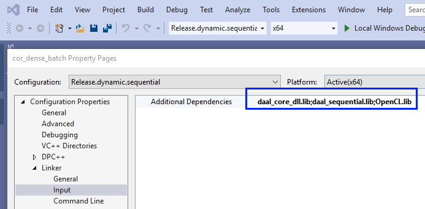

Build application with oneDAL¶
See Get Started Guides for Windows* and Linux* for instruction on how to build applications for C++. This section contains instructions for building applications with oneDAL for SYCL*.
Applications on Windows¶
Download and install Intel® oneAPI Base Toolkit.
In Microsoft Visual Studio* Integrated Development environment (IDE), open or create a C++ project for your oneDAL application to build.
In project properties set “Intel(R) oneAPI DPC++ Compiler” platform toolset:

In project properties add oneDAL includes folder to Additional Include Directories:

In project properties add oneDAL and TBB libraries folders to Library Directories:

In project properties add oneDAL and OpenCL libraries to Additional Dependencies:
Add the appropriate libraries to your project based on oneDAL threading mode and linking method:
Single-threaded (non-threaded) oneDAL
Multi-threaded (internally threaded) oneDAL
Static linking
daal_core.lib, daal_sequential.lib
daal_core.lib, daal_thread.lib
Dynamic linking
daal_core_dll.lib
aal_core_dll.lib
{kind=link}
Applications on Linux¶
Download and install Intel® oneAPI Base Toolkit.
Set environment variables by calling
<install dir>/setvars.sh.Build your application with clang++:
Add
fsycloption to the command:-fsycl
Add
ONEAPI_DAAL_USE_MKL_GPU_GEMMdefinition:-DONEAPI_DAAL_USE_MKL_GPU_GEMM
Add oneDAL includes folder:
-I<install dir>/daal/latest/include
Add oneDAL libraries. Choose the appropriate oneDAL libraries based on oneDAL threading mode and linking method:
Single-threaded (non-threaded) oneDAL
Multi-threaded (internally threaded) oneDAL
Static linking
libdaal_core.a, libdaal_sequential.a
libdaal_core.a, libdaal_thread.a
Dynamic linking
libdaal_core.so, libdaal_sequential.so
libdaal_core.so, libdaal_thread.so
Add an additional oneDAL library:
-foffload-static-lib=<install dir>/daal/latest/libintel64/libdaal_sycl.a
Examples¶
Dynamic linking, Multi-threaded oneDAL:
clang++ -fsycl -DONEAPI_DAAL_USE_MKL_GPU_GEMM my_first_daal_program.cpp -Wl,
--start-group -L<install dir>/daal/latest/lib/intel64 -ldaal_core -ldaal_thread.so -lpthread -ldl -lOpenCL -L<install dir>/tbb/latest/lib/intel64/gcc4.8 -ltbb -ltbbmalloc -foffload-static-lib=<install dir>/daal/latest/lib/intel64/libdaal_sycl.a -Wl,--end-group
Static linking, Single-threaded oneDAL:
clang++ -fsycl -DONEAPI_DAAL_USE_MKL_GPU_GEMM my_first_daal_program.cpp -Wl,
--start-group <install dir>/daal/latest/lib/intel64/libdaal_core.a <install dir>/daal/latest/lib/intel64/libdaal_sequential.a -lpthread -ldl -lOpenCL -foffload-static-lib=<install dir>/daal/latest/lib/intel64/libdaal_sycl.a -Wl,--end-group